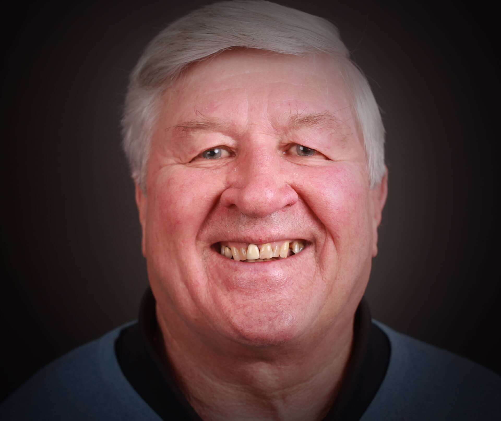
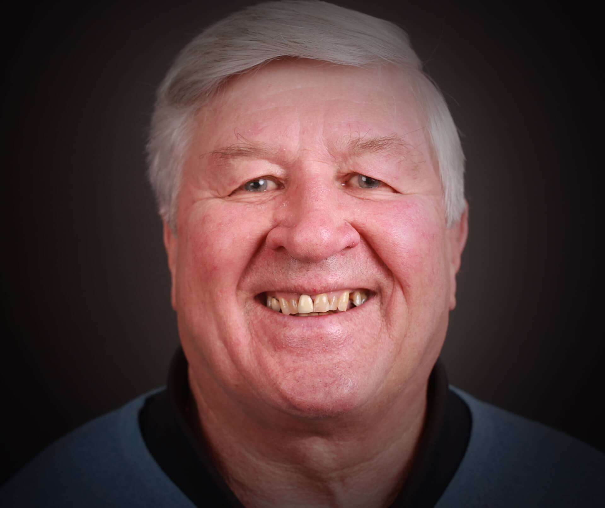

Take a look at these Proud Smiles, then hover or click to see the before photo and you'll also get the full case information such as procedures done, timeframe, patient concerns and more.
*these patients have consented to have their images used on this website. Some patients asked for their eyes not to be shown, hence the sunglasses on some of them. Copying or using these images is strictly prohibited.


 
